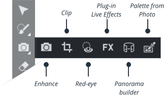
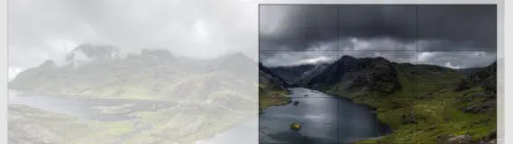
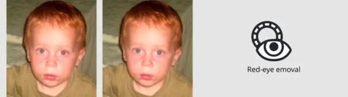
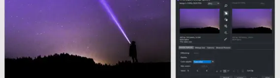
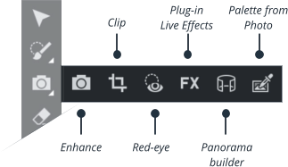
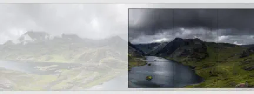
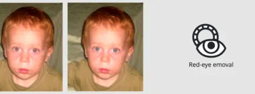
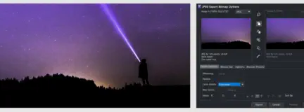

Editing Photo
An Introduction

Photo tool
Photos are an integral part of almost all creative work nowadays, from websites, to flyers, brochures, DTP work and more. Photo handling in Xara Web Designer+ is very different from what you may be used to with other graphics programs. Here we’d like to cover the basic steps of manipulating photos and bitmap images in Xara Web Designer+. Below you will see all tools that are part of Photo editing, and follow these links for demo videos on how to use them: Photo Editing Part I, Photo Editing Part II, Photo Editing Part IIIMore Creative Photo Tools
Find out more about the power of Xara Web Designer+ in our summary of some of the key benefits and features below.Additional information
In the online help you will find a lot of information on how to edit photos in Xara Web Designer effectively. Below are some of the useful topics.
Panorama Stitching
Creating high-quality panoramas can be a very complex and technical process, often
requiring special equipment. The panoramic stitching feature built into Xara Web
Designer+ requires none of these, and can use an every-day digital camera so that
anyone can create outstanding quality panoramic images in a few minutes.

Clip tool
Photo Enhance Tool is an easy, direct way to crop photos. The Clip Tool provides
additional controls to crop to a specific pixel size, or specific aspect ratio.


Red Eye Removal
Red eye removal is a common requirement for photos that have been taken in darker
conditions or with a flash. Simply select the red eye tool, place the ‘cross’ in the center
of the red eye and drag it out to the edge of the eye pupil until all the red is removed.

Saving & Exporting Photos
Selecting the Save option will always save a native .xar file file. To save a photo as a
JPEG, PNG or other image file type, it's necessary to use the Export option, or the
shortcut "Ctrl + Shift + E".


Press "Preview whole website" in the top toolbar.

Photo Enhance
When you select this Camera tool, it provides access to the main photo enhance controls - these adjust things like brightness and contrast levels, color controls such as saturation, color tinting, sharpen and blur and others. Here are the main controls on the Photo Enhance Tool.Replace the image one the left
1. Using the Selector Tool drag it, rotate or resize it. Note how everything repels around it. 2. Drag and drop a replacement photo from Windows File Explorer to replace it with your own. Note how it’s automatically tinted to match the website colors. 3. Preview this web page and move the mouse over this picture to see the mouse-over effect. 4. Xara Web Designer+ includes powerful photo-editing tools. You can adjust the brightness, color, sharpness, and more, as well as crop any picture.Photo Handling
Xara Web Designer Pro+ photo and bitmap handling is amongst the fastest to be found anywhere. It uses compression techniques that mean that Xara files including photos can be up to ten times smaller than equivalent images in other graphics programs, with enormous benefits for speed and usability. Plus Xara's unique non-destructive editing maintains the high quality of your original photo, however many times you edit it, and gives you the ability to undo any edits you've made to your photo, even after saving and reloading. As a result many people use Xara Web Designer+ as their primary, general purpose image composition tool.
Website made using only Xara Web Designer+, and no other graphics or software tools.


Press "Preview whole website" in the top toolbar.

Photo tool
Photos are an integral part of almost all creative work nowadays, from websites, to flyers, brochures, DTP work and more. Photo handling in Xara Web Designer+ is very different from what you may be used to with other graphics programs. Here we’d like to cover the basic steps of manipulating photos and bitmap images in Xara Web Designer+. Below you will see all tools that are part of Photo editing, and follow these links for demo videos on how to use them: Photo Editing Part I, Photo Editing Part II, Photo Editing Part IIIMore Creative Photo Tools
Find out more about the power of Xara Web Designer+ in our summary of some of the key benefits and features below.Additional information
In the online help you will find a lot of information on how to edit photos in Xara Web Designer effectively. Below are some of the useful topics.
Panorama Stitching
Creating high-quality panoramas can be a very complex and
technical process, often requiring special equipment. The
panoramic stitching feature built into Xara Web Designer+
requires none of these, and can use an every-day digital camera
so that anyone can create outstanding quality panoramic
images in a few minutes.

Clip tool
Photo Enhance Tool is an easy, direct way to crop photos. The
Clip Tool provides additional controls to crop to a specific pixel
size, or specific aspect ratio.


Red Eye Removal
Red eye removal is a common requirement for photos that have
been taken in darker conditions or with a flash. Simply select
the red eye tool, place the ‘cross’ in the center of the red eye and
drag it out to the edge of the eye pupil until all the red is
removed.

Saving & Exporting Photos
Selecting the Save option will always save a native .xar file file.
To save a photo as a JPEG, PNG or other image file type, it's
necessary to use the Export option, or the shortcut "Ctrl + Shift
+ E".
Photo Enhance
When you select this Camera tool, it provides access to the main photo enhance controls - these adjust things like brightness and contrast levels, color controls such as saturation, color tinting, sharpen and blur and others. Here are the main controls on the Photo Enhance Tool.
Editing Photo
An Introduction

Replace the image one the left
1. Using the Selector Tool drag it, rotate or resize it. Note how everything repels around it. 2. Drag and drop a replacement photo from Windows File Explorer to replace it with your own. Note how it’s automatically tinted to match the website colors. 3. Preview this web page and move the mouse over this picture to see the mouse-over effect. 4. Xara Web Designer+ includes powerful photo-editing tools. You can adjust the brightness, color, sharpness, and more, as well as crop any picture.Photo Handling
Xara Web Designer Pro+ photo and bitmap handling is amongst the fastest to be found anywhere. It uses compression techniques that mean that Xara files including photos can be up to ten times smaller than equivalent images in other graphics programs, with enormous benefits for speed and usability. Plus Xara's unique non-destructive editing maintains the high quality of your original photo, however many times you edit it, and gives you the ability to undo any edits you've made to your photo, even after saving and reloading. As a result many people use Xara Web Designer+ as their primary, general purpose image composition tool.
Website made using only Xara Web
Designer+, and no other graphics or software
tools.